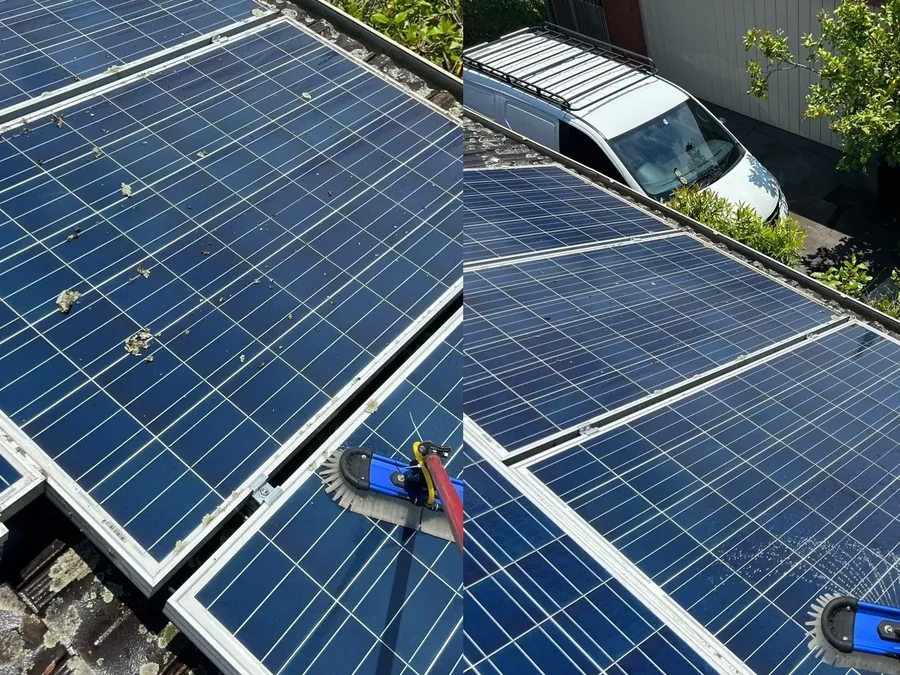
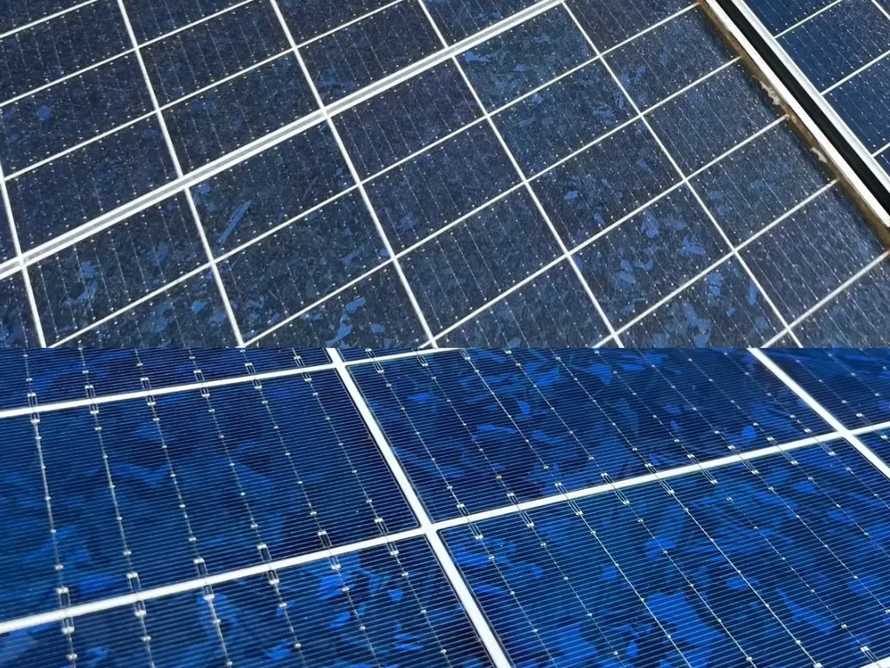
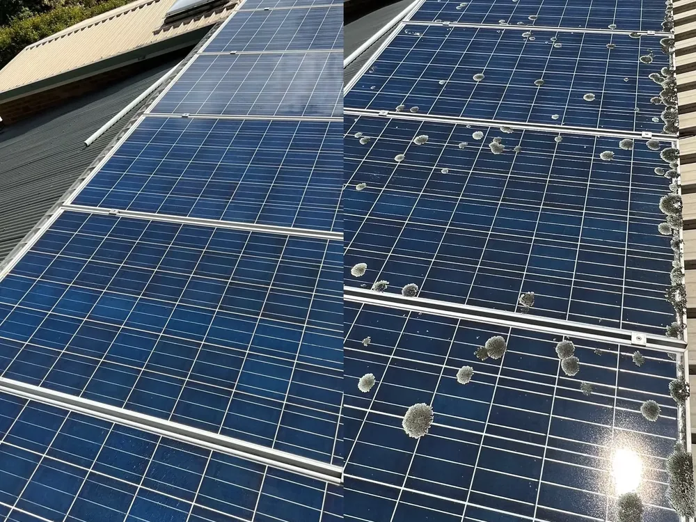
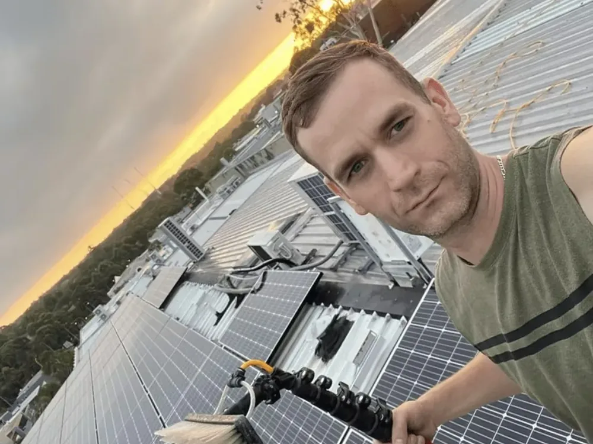

Solar Panel Cleaning Melbourne
Solar Panel Cleaning Melbourne — Restore Lost Output
Dirty panels can quietly cost you money. Our safe, streak-free clean removes dust, grime and bird droppings to help your system work the way it should.
Solar panels are a serious investment — but they only pay you back when they're working at full capacity. Dust, pollen, salt, bird droppings and general grime gradually coat the glass, blocking sunlight and reducing how much electricity your system generates. Because the drop happens slowly, most people never notice how much output they're losing.
Stan The Man Cleaning provides safe, professional solar panel cleaning across Melbourne's Eastern Suburbs. Using purified water and gentle, panel-safe methods, we clear away the build-up and leave your panels streak-free — helping restore lost efficiency and protecting your investment for the long term.
What's included
- Gentle, panel-safe cleaning using purified water
- Removal of dust, pollen, salt, grime and bird droppings
- Streak-free finish that maximises light absorption
- Safe roof access with proper height-safety equipment
- Careful work that protects panels and roof alike
- Ideal as an annual or bi-annual maintenance clean
Get the most from your solar investment
Studies consistently show that dirty panels produce less power — and in a sunny but dusty climate like Melbourne's, that build-up adds up over a year. A regular professional clean helps your system generate closer to its rated output, shortening your payback period and getting more value from every ray of sunshine. We handle the roof access safely so you don't have to, and we treat your panels with the care they deserve.
Servicing your local area
We regularly work in Donvale, Doncaster, Doncaster East, Templestowe, Warrandyte, Park Orchards, Ringwood, Mitcham, Nunawading, Blackburn, Box Hill, Balwyn, Bulleen and Eltham. If you're anywhere in Melbourne's Eastern Suburbs, we'd love to help.
Real results
See the difference
Drag the slider to see dust and grime lifted from a recent solar panel clean in the Eastern Suburbs.
Our process
How we clean your solar panels
Safe roof access
We set up height-safety equipment and inspect your array before cleaning.
Gentle pure-water clean
We use deionised water and soft brushes to remove dust, grime and bird droppings without scratching the panels or voiding warranties.
Check output & tidy
We do a final visual check and leave your panels clear so they can capture maximum sunlight.
Our work
Recent solar panel cleaning jobs



FAQs
Solar panel cleaning questions
Related services
Complete your exterior clean
Get more from your solar panels
Book a safe, professional solar panel clean today with a free, no-obligation quote.